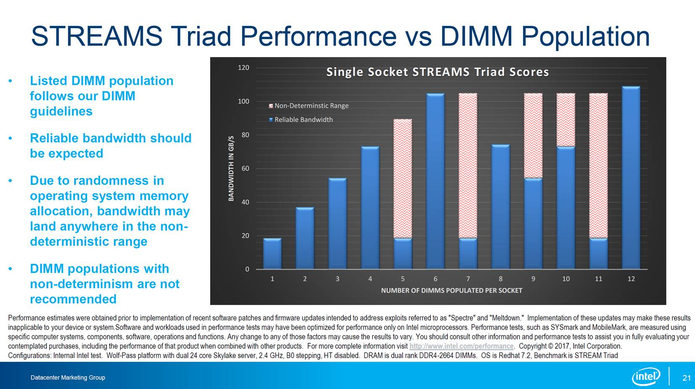

<html>
<head>
  <meta http-equiv="Content-Type"
   content="text/html; charset=utf-8">
  <title>Pocket Survival Guide - Tools</title>
  <link rel="stylesheet" href="psg.css" type="text/css">

  <LINK REL="SHORTCUT ICON" HREF="favicon.ico" type="image/x-icon"/>
  <META NAME="description" content="System Administrator Pocket Survival Guide -  A series of notes for Sys Admin"/>
  <META NAME="keyword" content="Sys Admin, System Administrator, Solaris, HP-UX, AIX, Linux, Note, Notes, Pocket, Survival, Guide, psg, data center, power, electrical, plug, LYS, LKS, LAPPLAPP"/>
  <META NAME="Robots" CONTENT="all"/>
  <META NAME="Author" CONTENT="Tin Ho"/>  
  
</head>
<body> 
<!-- -->
<div class="navheader">
<table summary="Navigation header" width="100%">
  <tbody>
    <tr>
      <th colspan="16" align="center">
	<A HREF="http://tiny.cc/TOOL">Sys Admin Pocket Survival Guide</A>
      </th>
    </tr>
    <tr>
      <td align="left"><a accesskey="h" href="psg.html">Home</a></td>
	  <td align="center"><a accesskey="s" href="sourceControl.html">sourceControl</a></td>
	  <td align="center"><a accesskey="g" href="git.html">git</a></td>
	  <td align="center"><a accesskey="f" href="firewall.html">firewall</a></td>
      <td align="center"><a accesskey="l" href="linux.html">Solaris</a></td>
      <td align="center"><a accesskey="s" href="sol.html">Solaris</a></td>
      <td align="center"><a accesskey="p" href="hpux.html">HP-UX</a></td>
      <td align="right"><a accesskey="a" href="aix.html">AIX</a></td>
    </tr>
  </tbody>
</table>
<hr>
</div>

<div class="chapter" lang="en">
<div class="titlepage">
</div>
</div>


<A NAME="Performance"></A>
<A NAME="Tuning"></A>
<A NAME="Performance_&_Tuning"></A>
<H1>
Performance, Benchmark, Troubleshooting, Tuning
</H1>

<CENTER>
<A HREF="http://www.brendangregg.com/linuxperf.html">

</A><BR>
<A HREF="http://www.brendangregg.com/linuxperf.html">
Brendan Gregg on Linux Performance</A>
</CENTER>

<BR>


<H5>CPU and memory</H5>

<PRE>
<LI> uptime
<LI> free -m, cat /proc/meminfo
<LI> top 
<LI> htop                       # tends to return a different "top" process list than top/pidstat/nmon
<LI> atop 			# collect top like process info over time (when run as cron)
<LI> pidstat 1                  # like top, run every 1 sec, but loggable. from sysstat rpm
<LI> mpstat -P ALL 1            # cpu utilization stat every 1 second (if no number defined, give avg of past X sec, not too useful)
<LI>
<LI> procinfo           # procinfo.rpm: <A HREF=http://www.kodkast.com/linux-package-installation-steps?pkg=procinfo>http://www.kodkast.com/linux-package-installation-steps?pkg=procinfo</A>
<LI> slabtop            # realtime kernel slab cache utilization
                        # think of slab as block of kernel memory holding cache of identical objects
                        # instead of kmalloc, a block of memory is allocated at once for efficiency and reduced fragmentation
<LI> smem -t -w -p	# report system memory usage by area, -t = total -w = whole sys -p = percentage.  can run as user
# singularity exec /global/scratch/users/tin/singularity-repo/tin6150_perf_tools_2024_0118.sif smem -t -w -p
<LI>
                      
<LI>
</PRE>

<H5>kernel, system calls </H5>

<PRE>
<LI> strace -tttT -p `pgrep java` 2>&1 | head -100 	# see system calls, exit after getting 100 trace calls.
							# eg is it reading 0 or 1 bytes at a time and thus spinning the CPU?  
							# note that strace cause ~100x delay
<LI>
<LI> perf top		# see <A HREF="#perf_events">perf_events</A>
</PRE>

<H5>Network</H5>
<PRE>
<LI> sar -n DEV 1     	# check network utilization.  reported in kBytes/s.
<LI> sar -n EDEV 1    	# rxfram reports frame alignment problems
<LI> sar -n TCP,ETCP 1	# check TCP stats, eg retransmit.  active = outbound, passive = inbound

<LI> iptraf (ubuntu) iptraf-ng (rhel7) 	# TUI network IO by port, protocol, live trace [easy]
<LI> iftop -i eth2						# provide live stats for inter-host traffic 
<LI> nicstat 1		# read/write KB/s, repeat every 1 second
<LI> netstat
<LI> ethtool eth0	# speed, duplex, new version under root has collision info
<LI> mii-tool -vv eth0	
<LI> ibstat		# from ofed
<LI>
<LI> nfsstat
<LI>
<LI> ntop                   # run server, then http://localhost:3000 or https://localhost:3001 
<LI> ntop -i "eth0,eth1,lo" # run server listening on multiple ports (need multi-thread version)
                            # lots of network stats, but mtu info > 1500 is incorrect for v. 5.0 (2012)

<LI> tcpdump		# trace network packages, advance
<LI>
</PRE>
<PRE>

# reset collision, drop, etc counters reported by ifconfig and ethtool -S
ethtool  -i enp94s0f1		# determine driver used (if not build into kernel)
ifconfig    enp94s0f1 down
modprobe -r ixgbe			# intel 10G NIC
modprobe    ixgbe
ifconfig    enp94s0f1 up

ethtool -S enp94s0f1  | egrep -i 'drop|col|err' # look for drop or collision, no report on pause frames
ethtool -S enp216s0f1 | grep -v ': 0$'  | more  # look for anything with non zero counter

ethtool -G enp180s0f0  rx 8192 tx 8192
ethtool -g enp180s0f0  # lower case for query, upper case for set
ethtool -C enp180s0f0  rx-usecs 100
ethtool -c enp180s0f0  

mlx5_core # mellanox 100G Ethernet (and IB?)


ss -tulp		# check socket status, see which port is open by what process.  add -n to show port by number

</PRE>

<H5>Disk I/O</H5>
<PRE>
<LI> iostat -xz 1	# -x = extended stats; -z = ommit zero / idle entries
<LI> iostat -xn 1	# NFS stats only
<LI> iotop		# iostat in top-like fashion, show top process using disk.  from iostat rpm
<LI> nmon 		# d for disk util.  N for NFS system calls
<LI> swapon -s
<LI>
<LI> hdparam
<LI> fio      		# Flexible IO tester (fio rpm)
</PRE>

<H5>Multipurpose</H5>

<UL>
<LI> nmon 		
<LI> vmstat    
<LI> sar  collectl, dstat <BR> 
<LI> Virtual Adrian Performance Monitor (<A HREF="#se">SE</A> Toolkit) for Solaris 6 onward.
<LI> Ganglia
</UL>

<PRE class=code>
vmstat 1 5
procs   -----------memory---------- ---swap-- -----io----   -system--  ------cpu-----
 r  b   swpd   free   buff  cache     si   so    bi    bo    in     cs us sy id wa st
15  0      0 7207116  31284 1328320    0    0     0     0    24     12  0  0 99  0  0
12  0      0 7207084  31284 1328320    0    0     0     0 88618 152257 44  1 55  0  0
12  0      0 8030280  31284 1328224    0    0     0    12 88673 152364 44  1 55  0  0
13  0      0 7210160  31284 1328224    0    0     0     0 88686 152315 43  1 55  0  0
12  0      0 7210284  31284 1328224    0    0     0     0 88683 152378 44  1 55  0  0
</PRE>


<H5> Advanced tools, eg to perform full software stack analysis </H5>
<UL>
<LI> systemtap 
<LI> sysdig
<LI> http://linuxperf.sourceforge.net/tools/tools.php
<LI> Kernprof
<LI> Lockmeter
<LI> Gcov
<LI> strace
<LI> ltt (linux trace facility)
<LI>perf        (linux-tools-common rpm)
<LI> DProbes
<LI>
<LI>

<LI>free, swapon, cat /proc/meminfo
<LI> nicstat
<LI> pidstat 1    (sysstat rpm)
<LI> pidstat -t 1 (by thread, disk IO)
<LI> iotop     (iostat rpm)
<LI> perf     (linux-tools-generic rpm, + kernel specific rpm) , eg:<BR>
     perf top
<LI> iostat -xz 1
<LI>slaptop
<LI>fio      (fio rpm)
<LI>hdparam
<LI>sysbench (sysbench rpm) eg cmd:   <BR>
    sysbench --test=cpu run <BR> 
    sysbench --test=fileio --file-test-mode=seqrewr run <BR>
<LI>lmbench
<LI>stap     (systemtap rpm)
    need some script...    
<LI>lttng    (lttng-tools rpm)
<LI>iptraf-ng    (TUI network IO by port, protocol, live trace) [easy]
<LI>dtrace   (systemtap-sdt-dev rpm)
<LI>dstat
<LI>collectl (sar like, designed for distributed computing/hpc)
<LI>
</UL>
<BR>

<BR>
<BR>

<H5> binaries, dependencies </H5>
<UL>
<LI> ldd
<LI> readelf -l /bin/ls | grep itnerpreter
<LI> dumpelf  /bin/ls    			# pax-utils.deb
</UL>


<H3>Determining memory utilization of a process</H3>

<PRE>
Goal is to determine how much memory to request for an hpc batch job.  eg, what value to give "qsub -l m_mem_free".

Ideally, there is a memory calculation equivalent to "time -p CMD".  
But, AFAIK, there isn't.  
So, these things will help finding a decent number for memory request.  

- ps aux -q PID, look at VSZ (in kB) column of the running process.
- cat /proc/PID/status, and look for VmPeak and VmSize (value should be similar to ps aux above) .
- run top/htop and find the process and see how much memory is being reported under VIRT .
- qacct -j JOBID, if accounting is enabled.  
     	The "mem" entry is in "GBytes CPU seconds" :(, but divide that by ru_wallclock and it give some idea.
	The "maxvmem" is largest amount memory the job used.
- perf_events don't seems to offer anything useful for this :(
- TCMalloc ?
- Valgrind ?

</PRE>


<A NAME="specs"></A>
<A NAME="performance_specs"></A>
<H1>Performance Specs</H1>

<H2>Disks</H2>

<A ID="sata_vs_sas_vs_nvme">
<A ID="sata_sas_nvme">
SATA vs SAS vs NVME, connector diagram: <BR>

<BR>
Source and more details: 
<A HREF="https://overclock3d.net/">overclock3d.net</A> 
<A HREF="https://overclock3d.net/news/storage/what_is_the_new_u_2_ssd_connection/1">SATA vs SAS vs NVME</A>
<BR>
<BR>


<!-- :set tabstop=8 shiftwidth=8  # which is what browser render as -->
<PRE>

SATA 150 has 150 MB/s bandwidth
SATA II  has 300 MB/s
SAS is 6 Gbps = 768 MB/s
PCIe 3.1 x4 NVMe = ...

NVMe.  Replaces AHCI.  Needed support from OS/kernel, but widely available ~2015, show up as /dev/nvme*.  NVMe drives are often in NAND.  Avail format: M.2, U.2, AIC (Add-In card, ie pci card)


M.2 = replaces mSATA 
  * typically on mboard, internal to machine, 3.3V only
  * NOT hot swappable--often on laptop, but number of servers use them too :-\
  * typically bare chips, gumstick format

U.2 (SFF-8639)
  * The U.2 connector is mechanically identical to the SATA Express device plug, but provides four PCI Express lanes through a different usage of available pins (wikipedia)
  * Some nvme drive support sata as well for backward compatibility, but at reduced bandwidth.
  * ie does not use SATA controller, straight to the PCIe bus
  * support hot swap, 3.3V or 12V.
  * typically inside an enclosure, mounted on a hot swap disk tray, like traditional 2.5" HDD

AIC
  * Add-In card format.  ie pci card.
  * back then hard some AIC card better performing than U.2 (not sure why, cuz U.2 should be PCIe x4 too).
  * Some AIC is just carrier for 2x U.2 drives.
	

b = bits (network, serial protocol))
B = Byte (storage, at least traditionally "parrallel", whole byte based protocol)
Ti = Si unit, ie multiple of 1000, not 1024.


			128KB		4KB		Latency		Power
			Seq read/write 	Rnd r/w		read/write	active/idle
			MB/s		IOPS 1000	microsec 	w	
---------------------	-------------	-----------	--------	------	-------
Intel SSD S4510  	560/510 	 97 /36 
Intel SSD S4610  	560/510 	 97 /51
Intel SSD P4510	1TB  	2850/1100	465 /70 	77/18 		10/5	64-Layer 3D TLC NAND
Intel SSD P4510 2TB	3200/2000	637 /81.5			12/5
Intel SSD P4510 8TB	3200/3000	641 /134.5			15/5

Intel SSD Pro 7600p M.2 3200/1625 	340k/275k				3D2 TLC 512 GB to 2 TB version
Intel SSD Pro 7600p M.2 1640/650	105k/160k					128 GB version	

Micron 9100 Max  Much older, no longer avail?

Micron 9200 Max U2      3430/2400 	 800/270
Micron 9200 Max AIC     4600/3800       1000/270

Micron 9300 Pro U2 3.8T	3500/3100	 835/105	86/11
Micron 9300 Pro U2 7.6T	3500/3500	 850/145

Micron 9300 Max U2 3.2T	3500/3100	 835/210		
Micron 9300 Max U2 6.4T	3500/3500	 850/310		


TLC = Tri-Level Cell.  3-bit addressing, maybe 32 or newer use 64 layers.
Larger capacity drive sometime has better performance, some as good as 2x!
Micron typically best.  Intel are decent.
Samsung typically worse, consumer oriented device.  Performance/Lifespan is probably 1 year.
Micron Pro are Sequential Read optimized, Max are good for random access.  Max reserve more cell to replaced expected failure of random access workflow (ie with many write/erase)


			Seq r/w Rnd r/w
			MB/s	MB/s	    IOPS
---------------------	-------	---------   ----	
Samsung HD501LJ 7200rpm  80-90 
WD Caviar Green 5400rpm 223
WD Red          5400rpm 368
Seagate Barracu 7200rpm 410      ?           120 is what NetApp use for calculations).  
				

For performance rule of thumb, 
estimate 7200 RPM drive to give about 100 to 150 MB/s.
This would be combination of sequential and random IO
which would mean about 1MB per IO-operation for drive doing 100-150 IOPS.

</PRE>

Ref: 
<UL>
<LI> https://www.tomshardware.com/reviews/desktop-hdd.15-st4000dm000-4tb,3494-3.html
<LI> https://ark.intel.com/content/www/us/en/ark/compare.html?productIds=122572,122579,122580,122573
<LI> https://blocksandfiles.com/2019/04/23/micron-simplifies-mainstream-nvme-ssd-range/
<LI>
</UL>

<A NAME="memory_bandwidth"></A>
<A NAME="memory_bw"></A>
<A NAME="stream"></A>
<H2> Memory Bandwidth </H2>

<A HREF="https://www.cs.virginia.edu/stream/ref.html"><TT>stream</TT></A> 
is a decent tool to mesure CPU to memory bandwidth access.  
<BR>

Below are high level summary info.  Diff CPU has diff numa arch and memory localization can have huge impact on latency and access speed.  use <TT>lstopo</TT> to determine core to cache mapping, etc.
<BR>


<OL>
	<LI></LI>
	<UL>
		<LI></LI>
	</UL>

	<LI>AMD EPYC</LI>
	<UL>
		<LI>8 memory channel per socket</LI>
		<LI><A HREF="https://www.dell.com/support/article/us/en/19/sln313856/amd-epyc-stream-hpl-infiniband-and-wrf-performance-study?lang=en">EPYC 7601 2.2 GHz 2x32c</A> Benchmark on Dell R7425 DDR4 2400 MT/s</LI>
		<LI>3 memory modes</LI>
		<OL>
			<LI>Memory Channel Interleave.  Reported result.  8 NUMA nodes for 2-socket system, close to hw implementation </LI>
			<LI>Memory Die Interleaving.   2 NUMA nodes for 2-socket system.</LI>
			<LI>Memory Socket Interleave.  1 NUMA node.  ie, same as NUMA disabled.  </LI>
		</OL>
		<LI>244 GB/s 2x32</LI>
		<LI>126 GB/s 1x32</LI>
		<LI>Same socket, diff die is ~30% slower.  Diff socket is ~65% slower.</LI>
		<LI>Max bandwidth is ~30 GB/s per core (absent of contention/sharing)</LI>
		<LI></LI>
	</UL>

	<LI> Skylake </LI> <!-- lr6 -->
	<UL>
		<LI>6 memory channels per socket </LI>
		<LI>Dell Benchmark: 3 DIMM: 52 GB/s. 6 DIMM: 104 GB/s (Dual Ranked DDR4 2644)</LI>
		<LI>In practice, 6 DIMM on 2 sockets got ~ 100 GB/s </LI>
		<LI>12 DIMM on 2 sockets got ~ 150 GB/s </LI>
		<LI>Some system have 4 or 8 slots per socket, when such slot is populated, memory bandwidth is variable as extra slot has to share the bus</LI>
		<LI></LI>
	</UL>

	<LI>KNL</LI> 
	<UL>
		<!-- cf1 -->
		<LI>286,357 MB/s (triads avg w/ 1x64 threads Phi 7210 @ 1.30 GHz cache mode)</LI>
		<LI><A HREF="https://downloads.dell.com/manuals/all-products/esuprt_software/esuprt_it_ops_datcentr_mgmt/high-computing-solution-resources_white-papers90_en-us.pdf">Dell benchmark for Phi 7230</A>:</LI>
		<LI>491,520 MB/s on MCDRAM Phi7230 [in-socked memory]</LI>
		<LI> 86,016 MB/s w/ 6 DDR4 dimms</LI>
		<LI> <A HREF="https://software.intel.com/en-us/articles/optimizing-memory-bandwidth-in-knights-landing-on-stream-triad">Running stream test on KNL</A>(Intel):</LI>
		<LI>
		<PRE>
		numactl -H 
		# should be in FLAT mode (ie, at least two NUMA domain, so that MCDRAM vs off-socket DDR4 memory can be addressed separately)
		# IF in cache mode, effect of in-socket memory caching cannot be removed from stream test
		export OMP_NUM_THREADS=64; export KMP_AFFINITY=scatter; 
		numactl -m 0
		./stream
		</PRE>
		</LI>
<!-- ~/HPCS_toolkit/run_stream_triad.sh /global/home/groups/scs/yqin/stream -->

	</UL>

	<LI>Broadwell</LI> <!-- lr5 -->
	<UL>
		<LI>102,216 MB/s (triads avg w/ 2x14 threads E5-2680v4 @ 2.40 GHz) [lr5]</LI>
		<LI> 98,266 MB/s (triads avg w/ 2x10 threads E5-2640v4 @ 2.40 GHz) [lr5_c20]</LI> <!-- lr5_c20 penguin with more RAM -->
		<LI></LI>
	</UL>

	<LI>Hashwell</LI> <!-- lr4-->
	<UL>
		<LI>104,796 MB/s (triads avg w/ 2x12 threads E5-2670v3 @ 2.30 GHz)</LI>
	</UL>


	<LI>Ivy Bridge</LI> <!-- lr3-->
	<UL>
		<LI>70,271.8 MB/s (triads avg w/ 2x8 threads E5-2670 @ 2.60 GHz)</LI>
	</UL>

	<LI>Nehalem</LI>
	<UL>
		<LI> 29,054 MB/s (triads avg w/ 2x4 threads E5530 @ 2.40 GHz) [mako]</LI>
	</UL>

	<LI></LI>
	<UL>
		<LI></LI>
	</UL>

</OL>


<BR>

<BR>
<BR>


<A NAME="cpupower"></A>
<A NAME="cpu_tuning"></A>
<H1>CPU tuning</H1>

Background info: 
<LI> <A HREF="https://metebalci.com/blog/a-minimum-complete-tutorial-of-cpu-power-management-c-states-and-p-states/">A MINIMUM COMPLETE TUTORIAL OF CPU POWER MANAGEMENT, C-STATES AND P-STATES</A>
<LI><A HREF="https://www.dell.com/support/article/us/en/04/qna41893/what-is-the-c-state?lang=en">Intel C-State levels</A>
<BR>
<BR>

<!--
	n0[134-138].savio3 Asus    GPU 4x RTX 4080Ti
	n0[143-145].savio3 Colefax GPU 8x RTX 4080Ti
    https://mail.google.com/mail/u/1/?zx=2xeddmwpage5#search/k_args/KtbxLzGcCdhxzJMxxFqZmjLKtCNfFDMmhg?compose=CllgCJZXhxsjqqJSNTQPwKrSTPrDxdBMFhMjtfdfRrKgrzsfBvdvXnFTqBnNQZdGgDdfBGfznMg
	/global/home/users/tin/CF_BK/savio3/colefax_n0143_savio3.rst 
	/global/scratch/tin/meli/osu_bw
-->

<PRE>

cstate and pstate, which govern powering down subsystem and voltage/frequency, respectively, helps save power but can cause unexpected latency in PCI bus and thus Infiniband performance.

Things to tweak:

1. remove your current kernel args "processor.max_cstate=1 intel_idle.max_cstate=0"
2. add the new kernel args "intel_pstate=disable"


wwsh -y provision set n0143.savio3 --kargs="nopti intel_pstate=disable processor.max_cstate=1 intel_idle.max_cstate=0"
	# didn't help with colefax gpu 
wwsh -y provision set n0143.savio3 --kargs="nopti processor.max_cstate=1 intel_idle.max_cstate=1"
	# osu_latency, osu_bw still bad , even after cpupower -g performance
(very old ver of wwulf may only keep first kargs param.)
cat /proc/cmdline after machine boot to see kernel arg actually used to boot.
ref: https://access.redhat.com/solutions/202743
	 https://www.kernel.org/doc/html/latest/admin-guide/kernel-parameters.html

        intel_idle.max_cstate=  [KNL,HW,ACPI,X86]
                        0       disables intel_idle and fall back on acpi_idle (ie /sys/devices/system/cpu/cpuidle/current_driver=none)
                        1 to 9  specify maximum depth of C-state.
						
						https://www.thomas-krenn.com/en/wiki/Processor_P-states_and_C-states
						C0 – Active Mode: Code is executed, in this state the P-States (see above) are also relevant.
						C1 – Auto Halt
						C1E – Auto halt, low frequency, low voltage
						C2 – Temporary state before C3. Memory path open
						C3 – L1/L2 caches flush, clocks off
						C6 – Save core states before shutdown and PLL off
						C7 – C6 + LLC may be flushed
						C8 – C7 + LLC must be flushed

						disabling pstate seems to have significant impact on infiniband latency (osu_latency), but then keep cpu running at normal clock rate and not slowing down.
						cstate doesn't seems to have impact on osu_latency.  ie left /sys/module/intel_idle/parameters/max_cstate = 9 


pdsh -w n0[143-145].savio3 "cat /proc/cpuinfo | grep 'cpu MHz' | head -1"

cat /sys/module/intel_idle/parameters/max_cstate	# 9 is default.  0=disabled


kargs not likely useful.  cmd should work, but need them installed and invoked on boot...
	Intel Cascadelake, kargs="quiet nopti"                 ==> cpupower driver: intel_pstate  # n0229.sav3
	Intel Cascadelake, kargs="nopti intel_pstate=disable"  ==> cpupower driver: no or unknown cpufreq driver is active on this CPU # n0138.sav3
	AMD Epyc Rome,     kargs="quiet nopti"                 ==> cpupower driver: acpi-cpufreq  # n0209.sav3 Epyc 7302


cpupower frequency-set -g performance
# 800 or 1200 is low
# 2600 would be more performant, though it does use more power.


cat /sys/devices/system/cpu/cpu*/cpufreq/cpuinfo_min_freq
cat /sys/devices/system/cpu/cpu*/cpufreq/cpuinfo_max_freq
cat /sys/devices/system/cpu/cpu*/cpufreq/cpuinfo_cur_freq
(seems not avail if psate is disabled, ie, when using acpi driver instead of intel_pstate driver (?)
but cat /proc/cpuinfo | grep MHz is reflective of cpuinfo_cur_freq )

turbostat

kargs intel_pstate=disable would (mostly*) make cpu run at a single frequency.  
lscpu would then reports a single fixed frequency instead of Max/Min.
(mostly*) = Most of the time.  BIOS pstate setting on Tyan mboard w/ casdelake cpu also need to be disabled.

Power utilization tends to go up
(for Linux kernel 3.x, the default is to use acpi driver when intel_pstate=disable is ABSENT)


Tests:

mpirun -np 2 -H 10.0.7.144,10.0.7.145 -report-bindings -bind-to core  osu_latency  # need to be able to ssh to node to run orte
# latency below 1.20 us would be good;  ~2.2 is common.  3+ us starts to be bad.   5.6+ would be bad.  10+ would be horrible
# PCI switch would add latency of ~0.3 us.
# cpu binding to PCI slot of IB card is needed for optimal performance, ~0.4 us.  
# ethernet latency is in ms (? maybe ~100 us).  
# OSU_latency maybe subject to (mpi) timing bug.  at least running linpack with mpi may get affected depending on clock frequency setup.


mpirun -np 2 -H 10.0.7.144,10.0.7.145 -report-bindings -bind-to core  osu_bw
# Size        Bandwidth (MB/s)     bad eg:
#                     good eg:     bad eg:
1                         2.67       1.55
2                         5.34       3.51
4                        12.00       7.32
...
32768                  9956.58     7977.42
65536                 11726.98     9445.02   # good BW plateau much earlier and at higher value
...
2097152               12403.11    10018.76
4194304               12411.50    10024.22


date ; time -p mpirun -np  2 -H 10.0.7.195,10.0.7.196 -report-bindings --bind-to core --cpu-set -0-15 osu_latency; date

[n0195.savio3:42894] MCW rank 0 bound to socket 0[core 0[hwt 0]]: [B/././././././././././././././././././.][./././././././././././././././././././.]
[n0196.savio3:43753] MCW rank 1 bound to socket 0[core 0[hwt 0]]: [B/././././././././././././././././././.][./././././././././././././././././././.]
# OSU MPI Latency Test v5.4.0
# Size          Latency (us)
0                       2.46
1                       2.54
2                       2.32
4                       2.32
...
2097152               327.63
4194304               648.33
real 4.07
user 0.10
sys 0.12


</PRE>


<BR>
<BR>

<H5>To save power</H5>

having just BIOS Latency Optimized workload and no kargs of intel_pstate=disable give CPU running at 1200 MHz.
in this state, can use `cpupower frequency-set -g performance` to get to performance mode (perhaps prolog script)
and `cpupower frequency-set -g powersave` to get back to 1200 MHz, saving some power, perhaps use epilog script for job to invoke it. <BR>
but slurm epilog/prolog does not run as root, but as slurm, so may need to use sudo.
 <BR>
 <BR>
singularity exec /global/scratch/tin/singularity-repo/perf_tools7.simg cpupower frequency-info --policy <BR>
# not really showing what policy is currently in use <BR>
singularity exec /global/scratch/tin/singularity-repo/perf_tools7.simg cpupower frequency-set -g performance <BR>
singularity exec /global/scratch/users/tin/singularity-repo/perf_tools7.simg cpupower frequency-info

power utilization difference between performance vs powersave is not drastic (unlike intel_pstate=disable).  So wwulf object to set this at boot maybe good.  no need to mess with prolog/epilog.
 <BR>
 <BR>
 <BR>

another alternative is to 
simply power save or shutdown the node via slurm
<A HREF="https://slurm.schedmd.com/power_save.html">https://slurm.schedmd.com/power_save.html</A>
 <BR>
 <BR>
Slurm does not currently (v 19.10) has a way to keep track of power usage of a cluster,
cannot easily implement cap.
But perhaps tracking it via "consumable" counter, thinking of it as a license to be check out, 
then each node that comes on checkout N "miniamp token" so that Slurm can know roughtly how much it can go...
<PRE>
</PRE>

<BR>
<BR>


Things that may be relevant to CPU frequency and thus bus latency:

<PRE>

3a. Bios Changes

I went to the bios of two asus nodes (n0137.savio3, n0138) and made a number of changes.
The latency, measured only between two nodes, is ~3.2 us.  Better than the 4 us originally, but still not the 1.2 us we are getting from the supermicro nodes.  

disable hyperthreading (was enabled)
        Intel TXT left as disabled
        VMX left as enabled
        SMX left as disabled


there were lot of profile optimization for various benchmark, like MP Linpack, spec cpu, HammerDB, STREAM Triad, etc.
        mostly, think it change Engine Boost
        core optimizer is always disabled for many benchmark/workflow i selected
end up picking by workload  (recommended to operate at 25C or below, so not sure if we should leave this on?)
        picked HPC
        (other options: Latency optimized, Peak Frequency, power efficient)
        change
        Engine Boost  -> Level3(Max)   (was disabled
        core optimizer is left as disabled
       

P-state:   (left all as default)
        boot performance: max
        energy efficient turbo: enable
        turbo mode: enable
     


c-state
        not entirely obvious
        disabled CPU C6 report   ##
        disabled C1E
package c state control
        changed from auto to C0/C1 state  ##

        left sw controlled T-states as disabled (default)

trusted computing
        Changed to "disabled" security device
        none was found to begin with anyway

ACPI settings
        Disabled hibernation


3b. A second BIOS change that I tested, but no real improvements either:

Socket Config 
  CPU - Adv PM Tuning
    Energy perf BIAS
      Workload config
        - first test above had left as Balanced
        - 2nd test changed to I/O sensitive

</PRE>


Ref:

<LI> <A HREF="https://photos.app.goo.gl/BGg3sej3oWyzPnbp9">
	Summary of workflow profile and their configured Pstate info on Asus GPU nodes (AMI BIOS)</A>

<LI> <A HREF="https://photos.google.com/album/AF1QipMqkSucnOzq757nZCUzjGlM3u6Ul3HFqKLlheae">many screenshot of BIOS settings for Asus</A>

<LI> <A HREF="https://ulhpc-tutorials.readthedocs.io/en/latest/parallel/mpi/HPL/">ULHPC tutorials</A> especially the very handy grid diagram deciphering NB, N, P, Q, under HPL main parameters.

<LI> <A HREF="https://netlib.org/benchmark/hpl/tuning.html">tuning HPL.dat</A>, from the source (netlib).

<LI> <A HREF="https://sites.google.com/site/rangsiman1993/comp-env/test-and-benchmarks/benchmark-hpc-intel-linpack">Ragisman benchmarks</A>
<LI> <A HREF=""></A>

<BR>

<A NAME="amd"></A>
<A NAME="epyc"></A>
<A NAME="rome"></A>
<H5>AMD Epyc</H5>

<BR>
<PRE>
7xx1 = 1st Gen Epyc Naples
7xx2 = 2nd Gen Epyc Rome   ca 2019
7xx3 = 3rd Gen Epyc Milan  ca 2020.11
</PRE>


<A ID="amd_tuning_guide"></A>

<LI> <A HREF="https://developer.amd.com/resources/epyc-resources/epyc-tuning-guides/">Epyc tuning guides</A> from AMD dev site</LI>
<LI> <A HREF="https://developer.amd.com/wp-content/resources/56420.pdf">HPC Tuning guide for AMD EPYC</A> (PDF Dec 2018)</LI>
<LI> <A HREF="https://developer.amd.com/wp-content/resources/56827-1-0.pdf">HPC Tuning guide for AMD EPYC 7002</A> (PDF Jan 2020)</LI>
<LI> <A HREF="https://developer.amd.com/wp-content/resources/56224_1.10.pdf">Linux Network Tuning Guide for AMD EPYC</A> (PDF May 2018)</LI>
<LI> <A HREF="https://developer.amd.com/wordpress/media/2020/04/Compiler%20Options%20Quick%20Ref%20Guide%20for%20AMD%20EPYC%207xx2%20Series%20Processors.pdf">Compiler Options Quick Ref Guide for AMD EPYC 7xx2 Series Processors</A> (PDF Nov 2019)</LI>
<LI> <A HREF=""></A></LI>
<LI>Logical processor, Hyperthreading is called Simultaneous Multi-Threading (SMT)</LI>
<LI>SEV = Secure Encrypted Virtualization (memory encryption per Virtual Machine</LI>
<LI>SME = Secure Memory Encryption (encrypts all memory)</LI>


<PRE>

C-states should be left enabled in BIOS.
C2 can be disabled for IB via cli.

- C0: active, the active frequency while running an application/job.
- C1: idle
- C2: idle and power-gated. 
      This is a deeper sleep state and will have a greater latency in getting to C0 
      compared to when it idles in C1. 

For a HPC cluster with a high performance low latency interconnect such as Mellanox
disable the C2 idle state. Assuming a dual socket 2x32 core system
cpupower -c 0-63 idle-set -d 2
• Set the CPU governor to ‘performance’:
cpupower frequency-set -g performance


Use 
hwloc-ls to find out which cpu id is closest to the IB
then use
numactl -C $CPUID osu_bibw
to bind the MPI process (eg osu_* microbenchmark binary) to the cpuid closest to the IB
for lowest latency.


</PRE>


Virtual Memory reclaim (good to run in epilog to free up cache)
<PRE>
/proc/sys/vm/zone_reclaim_mode

sync

echo 1 > /proc/sys/vm/drop_caches [frees page-cache]
echo 2 > /proc/sys/vm/drop_caches [frees slab objects e.g. dentries, inodes]
echo 3 > /proc/sys/vm/drop_caches [cleans page-cache and slab objects]


</PRE>


Max performance is to have most NUMA that can be supported.
Each socket can do 1,2,4 NUMA (zone?).
For NUMA=4 req all DIMM to be populated?
But if use NUMA=2 or 1, how to run HPL with OpenMP?

<BR><BR>

<A NAME="GPU_Benchmark"></A>
<H1>GPU Benchmark</H1>

<PRE>

docker login nvcr.io
# Username: $oauthtoken
# Password: cWR2az...   

CONT='nvcr.io/nvidia/hpc-benchmarks:21.4-hpl'    	# linpack
CONTcg='nvcr.io/nvidia/hpc-benchmarks:21.4-hpcg'   	# congutate gradient
CONT_i='registry:443/tin/hpc-benchmarks:21.4-hpl'	# internally hoster registry

docker pull $CONT
docker tag  nvcr.io/nvidia/hpc-benchmarks:21.4-hpl   registry:443/tin/hpc-benchmarks:21.4-hpl
docker image push registry:443/tin/hpc-benchmarks:21.4-hpl


docker run     -v /global/home/users/tin:/mnt --gpus all $CONT_i \
  mpirun --mca btl smcuda,self -x UCX_TLS=sm,cuda,cuda_copy,cuda_ipc  --bind-to none -np 2 \
  hpl.sh             --cpu-affinity "0-7:120-127" --gpu-affinity "0:1" --cpu-cores-per-rank 8 --dat /mnt/hpl_dat/HPL-a10-Ns=20k.dat #HPL-a10.dat


docker run     -v /global/home/users/tin:/mnt --gpus all registry:443/tin/hpc-benchmarks:21.4-hpl   mpirun --mca btl smcuda,self -x UCX_TLS=sm,cuda,cuda_copy,cuda_ipc  --bind-to none -np 2   hpl.sh  --xhpl-ai  --cpu-affinity "0-7:120-127" --gpu-affinity "0:1" --cpu-cores-per-rank 8 --dat /mnt/hpl_dat --dat /mnt/hpl_dat/HPL-a10-Ns72k_1x2.dat


</PRE>

<A NAME="perf"></A>
<A NAME="performance"></A>
<A NAME="performance_measurements_commands"></A>
<H1>Performance Measurements Commands</H1>
<BR>

These are pretty platform agnostic

<H2>System Build-In tools</H2>


<PRE>
ps -e -o pid,vsz,ruser,comm= | sort -n -k 2 
	# show all process, sorted by virtual memory size (Kolumn 2)
ps -efl | sort -n -k 10
	# show all process with lots of details, sorted by SZ (Kolumn 10)

ps fields:
rss        RSS      resident set size, the non-swapped physical memory that a task has used (in kiloBytes).
                    (alias rssize, rsz).
size       SZ       approximate amount of swap space that would be required if the process were to dirty all
                    writable pages and then be swapped out. This number is very rough!
sz         SZ       size in physical pages of the core image of the process. This includes text, data, and
                    stack space. Device mappings are currently excluded; this is subject to change. See vsz
                    and rss.
vsz        VSZ      virtual memory size of the process in KiB (1024-byte units). Device mappings are
                    currently excluded; this is subject to change. (alias vsize).
</PRE>
                                                                                                      
<!-- cmd.admin.ref.tr -->

<PRE>
netstat -ta     show current intenet services/connections
        -a  : show (a)ll  (include listening port process)
        -n  : ip (n)umber only (no dns lookup)
        -r  : (r)outing table   (change with route cmd)
        -i  : show stat for diff nic (i)nterfaces
        -k ce0 : lot of interface specific info, ce NIC will have duplex stat.

netstat -tulpn	# list LISTEN port and process 
netstat -pan 	# list process and ports it has open

netstat -p	: print ip to mac address table known to host  (solaris?)
netstat -k 	: print lot of kernel stat, among it hme0 is for the sun's build in 
		  happy meal ethernet nic (see sunsolve infodoc 17416 for explanation of these 
		  undocumented stats, good for trobleshooting network latency, comare agaist cisco stat.)
netstat -s	: show high level packet send/receive/fragment info

vmstat -a   : all 
       -n   : 
       -p   : process owning port

iostat -xn 30	: check for disk activity, anything more than 5% busy and avg resp time > 30 ms is bad.

nfsstat

mpstat	10	: processor stats, repeat every 10 seconds
		: In Solaris, it reports context switch, interrupt, mutex spin, xcal, etc
		: see http://sunsite.uakom.sk/sunworldonline/swol-08-1998/swol-08-perf.html
mpstat -A	= -u -I ALL -P ALL
		  -u     = report cpu util
		  -I ALL = interrupt stat
		  -P ALL = all processor

cpustat		: find out what cpu is doing...

truss -c -p PID		: find number of system call and usr time for a process (sol, linux use strace)

lockstat sleep 5	: gather kernel lock stats during the sleep period (5 sec)
			: solaris, run as root
protocol
sysmon
trapstat, thread list, kmastat, kmausers


GUDS

Guds is a script to gather performance stats for Solaris.
Sample usage is
./guds_2.4.5
./guds_2.4.5 -qX -H3 -s65040465

-qX is for quite mode
-H3 is for running it for 3 hours
-sNNNNN is the sun case number (info embeded in dirs created by guds to
store the files).

It collects lots of info in /var/tmp/CASEID/guds-DATE-TIME/...

May need lot of know how to analyze data.
Having a baseline when things is good and when there are 
performance problems would help.


date; mkfile 1000m test; date			 	# create a 1 GB file (filled with 0)
date; dd if=/dev/urandom of=test bs=1024 count=100000 	# same, file has random data.

# encrypt /dev/zero, so that data will be kinda random.  
# good speed for cpu with aes instruction 
# eg could get 1.1 GB/s on a flash storage
dd if=<(openssl enc -aes-256-ctr -pass pass:"Hello" -nosalt < /dev/zero) of=/dev/null bs=1M count=500000 iflag=fullblock

</PRE>

<H5>NIC tuning</H5>

Update /etc/sysctl.conf with the following min values for buffer size:  <BR>


1GbE connected systems
<BR>
<PRE>
net.core.wmem_max = 262144
net.core.wmem_default = 262144
net.core.rmem_max = 262144
net.core.rmem_default = 262144
</PRE>

10GbE connected systems
<BR>
<PRE>
net.core.wmem_max = 16777216
net.core.wmem_default = 524287
net.core.rmem_max = 16777216
net.core.rmem_default = 524287
</PRE>

<H5>NFS Performance Tunning</H5>

<LI>Use Jumbo Frame (MTU of 9000) if running specilized application (eg, cluster, RAC).  Read up on Path MTU Discovery and ensure MSS is also set correctly.
<LI>NFS, use TCP instead of UDP, and specify a larger rsize and wsize of 32K instead of default 8K.  Modern Linux will actually default to negotiate payload size with NFS server, so best to actually not set rsize/wsize anymore.  Linux allow them to be up to 1MB.  Isilon OneFS 7.2 can handle 128K and 512K for r/wsize.  Netapp is still recommending harc coding something small like 32k or 64k.
<LI>NFS noac option means no attribute cache, this would dramatically increase getattr calls.  Not recommended unless needed by the application.


<BR><BR>


<A ID="sar"></A>
<H3>
SAR - System Activity Reporter
</H3>
<!--sar.ref-->


SAR is a simple tool to collect performance stat shipped with most OS.
It is often a cronjob to collect iostat, vmsat, etc and put them in a nicely accessible directory structure.  
Setup and usage are very similar in HP-UX, Sun, AIX, and now even for Linux.
Very lightweight, can run on all machines and keep logs for when trouble arises.

<BR>

Also check out
<a href="http://sourceforge.net/projects/ksar/">
ksar</a>

and sar2rrd
(
<A HREF="http://www.trickytools.com/php/sar2rrd.php">
http://www.trickytools.com/php/sar2rrd.php</A>
)
<BR>
SARReporter is moneyware.
<BR><BR>

<A NAME="sar"></A>
<h4>SAR in Linux</h4>
<PRE>

yum install sysstat
It install /etc/init.d/sysstat, run sadc to collect the stats.
Data saved in /var/log/sa/saNN, where NN is the calendar day for which the stat is collected.  
Data is kept for 1 week.
sadc -S SNMP  is needed to collect history info for IP, TCP, UDP, ICMP.
sadc -S IP6   is needed for v6 version of above.


sar         # shows most common stats
sar -A      # shows all recorded activities

sar -r      # memory and swap utilization (free vs used; 98% util for 4 days on end is okay)
sar -R      # memory rate stat (frmpg/s = freed mem page per sec.  -ve = allocated pages)
sar -S      # swap utilization
sar -w      # swap rate

sar -q      # shows load avg, run queue length
sar -u      # combined cpu util
sar -P ALL  # per-cpu utilization

sar -B      # paging stats
sar -b      # io xfer rate

# show report recorded on named file with start time of 8pm, end time of mid-nite, 
# at interval of 1800sec (30min)  (default is 10min interval)
sar -f /var/log/sa/sa22 -s 22:00:00 -e 23:59:00 -i 1800 

</PRE>

Live Network Reporting

<PRE>

sar -n KEYWORD 1		# live network report every 1 sec

sar -n ALL 1-5			# report all network stats

sar -n DEV 1			# check network dev utilization.  reported in kBytes/s. 
sar -n DEV | grep enp1s0f0	# specific nic
sar -n EDEV 1			# dev errors, eg rxfram reports frame alighment errors
sar -n NFS,NFSD 1		# NFS client and server stats
sar -n SOCK 1			# reports IP fragment in use (from mismatched MTU?)

sar -n IP 1			# check network dev utilization.  reported in kBytes/s. 
sar -n TCP,ETCP 1  		# check TCP stats, and errors eg retransmit.  active = outbound, passive = inbound

</PRE>

<h4>SAR in HP-UX</h4>

<PRE>

Basic SAR Setup (from HP-UX sys admin handbook and tooltips, p503):

sar -o /tmp/sar.data 60 300 		# run sar every 60 sec for 300 count, 
	-o store info in file (bin)

sar -u -f /var/adm/sa/saXX		# read data from file (Solaris, XX = date number)
sar -u -f /tmp/sar.data			# read data from file (HP-UX)
	-u display cpu info (similar to iostat and vmstat)
	-b buffer cache activity, imp for oracle
	-d disk activity
	-q avg queue length (if run queue > num of cpu, will have to wait).
	-w swap info

Setup SAR data collection for HP-UX (should also work for other platform):

http://www.sarcheck.com/sarhowto.htm	(Actually SarCheck.com, but cost money!)

mkdir  /var/adm/sa, 
then setup root crontab:

#collect sar data  	# every 20 min 8-5, hourly outside normal work 
0 * * * * /usr/lbin/sa/sa1
20,40 8-17 * * 1-5 /usr/lbin/sa/sa1
#reduce the sar data	# generate pre-formated report focus for business hrs
5 18 * * * /usr/lbin/sa/sa2 -s 8:00 -e 18:01 -i 1200 -A

# sample for SF + Minsk work hours (10 hours diff)
0 * * * * /usr/lbin/sa/sa1
15,30,45 0-8,10-19,23 * * 1-5 /usr/lbin/sa/sa1
05 21 * * * /usr/lbin/sa/sa2 -i 3600 -A

# sa1 is data collection to /var/adm/sa/saXX
# sa2 really produce condense version of report to /var/adm/sa/sarXX (sar vs sa)

# filenames are reused every month.
# use sar -A -f /var/adm/sa/saXX to get more detail report than std summary.
</PRE>

<h4>SAR in Solaris</h4>

<PRE>
Solaris starts sadc in /etc/rc2.d/S21perf , a deamon to collect sar info.
	the script really run /usr/lib/sa/sadc /var/adm/sa/sa`date +%d`

</PRE>

<h4>SAR in AIX</h4>

<PRE>

AIX has preset entries in crontab for 'adm'.  Check to ensure script exsit.
sar logs are stored in /var/adm/sa

</PRE>


<A ID="perf"></A>
<A ID="perf_events"></A>
<H2>perf_events</H2>

perf_events aka "perf" is a sophisticated observation tool for linux that does in-kernel counts (as opposed to top's sampling at regular interval, which tends to miss really short lived process).
<BR>
perf is more friendly to sysadmin, DTrace is more targetted toward developers.  But perf still has lots of gotchas to get it fully working (broken stack, missing symbol tables, etc).  See slide 40 of 
<A HREF="http://www.brendangregg.com/blog/2015-02-27/linux-profiling-at-netflix.html">http://www.brendangregg.com/blog/2015-02-27/linux-profiling-at-netflix.html</A>
<BR>


Installing perf_events: <BR>
<UL>
<LI> Ubuntu  use linux-tools-common + kernel specific rpm eg linux-tools-generic 
<LI> RHEL6   use perf-2.6.32-431.el6.x86_64.rpm
<LI> RHEL7   rpm ??
</UL>

<BR>

<H5>Sample performance troubleshooting session with perf  (pretty much run everything as root)</H5>

<!-- more details in https://mail.google.com/mail/u/0/#inbox/15441607e570416e -->
<!-- mostly from http://www.brendangregg.com/linuxperf.html  SCaLE13x (2015)  -->
<!-- also in     http://www.slideshare.net/brendangregg/scale2015-linux-perfprofiling -->

ref: <A HREF="http://www.brendangregg.com/perf.html">http://www.brendangregg.com/perf.html</A>
<BR>

<PRE>
perf list    			# list events
perf list | grep ext4		# look for fs related event

perf stat CMD 			# count events from execution of "cmd", perf stat collect data till the CMD completes 
perf stat uptime		# run the command uptime and show general cpu usage stat
perf stat -p PID 		# hit ^C to see CPU usage stat of a running process collected while perf ran
perf stat -a sleep 5		# system wide CPU usage, collect till CMD "sleep 5" completes
perf stat -e 'ext4:*' ls	# run the command ls and capture ext4 related events
perf stat -e 'ext4:*' -a sleep 5     # collect ext4 events of all process, for 5 seconds, then exit and print output to screen


perf record -F 99 -a -g -- sleep 10    	# capture stack at freq of 99 Hz for 10 seconds
					# result captured to file perf.data
perf record -F 99 -p PID		# profile a running process, until ^C


perf report   			# view perf record data stored in perf.data (interactive TUI)
perf report --sort comm,dso
perf report -n --stdio		# output report to console

perf annotate --stdio		# annotated instructions w/ %, need debuginfo or will feel like reading assembly dump!

perf script  			  	# print out all events as text

# generate a "flamegraph"  
perf script &gt; out.perf02  	
cat out.perf02 | ./stackcollapse-perf.pl | ./flamegraph.pl &gt; out.svg 	
</PRE>

flamegraph is stack trace across time (on x-axis), so to get idea what fn call is taking lot of time.
<!-- see it at http://www.brendangregg.com/blog/2015-02-27/linux-profiling-at-netflix.html -->
The tool is avail from 
<A HREF="http://www.brendangregg.com/FlameGraphs/cpuflamegraphs.html">http://www.brendangregg.com/FlameGraphs/cpuflamegraphs.html</A>,
which will generate an image map on top of the SVG, allowing for interactive drill down!
<BR>

<A HREF="http://www.brendangregg.com/FlameGraphs/cpuflamegraphs.html">

</A>
<BR>


<H5>perf one liners</H5>
From <A HREF="http://www.brendangregg.com/blog/2015-02-27/linux-profiling-at-netflix.html">http://www.brendangregg.com/blog/2015-02-27/linux-profiling-at-netflix.html</A>
<BR>

<PRE>

# Sample CPU stack traces for the specified PID, at 99 Hertz, for 10 seconds:
perf record -F 99 -p PID -g -- sleep 10

# Sample CPU stack traces for the entire system, at 99 Hertz, for 10 seconds:
perf record -F 99 -ag -- sleep 10

# Sample CPU stack traces, once every 10,000 Level 1 data cache misses, for 5 s:
perf record -e L1-dcache-load-misses -c 10000 -ag -- sleep 5

# Sample CPU stack traces, once every 100 last level cache misses, for 5 seconds:
perf record -e LLC-load-misses -c 100 -ag -- sleep 5 

# Sample on-CPU kernel instructions, for 5 seconds:
perf record -e cycles:k -a -- sleep 5 

</PRE>

<A ID="se"></A>
<A ID="RICHP"></A>
<!--setoolkit-install.ref-->
<!--setoolkit.ref-->
<H2>SE Toolkit</H2>

Virtual Adrian Performance Monitor (SE) Toolkit for Solaris 6 to 10.
<BR>
Download: 
<A HREF="http://www.sunfreeware.com/setoolkit.html">SunFreeware</A>
<A HREF="http://sourceforge.net/projects/setoolkit/">SourceForge</A>


<PRE>

setup env:

export PATH=$PATH:/opt/RICHPse/bin
export SEPATH=/opt/RICHPse/examples:/opt/RICHPse/toptool

interactive tools:

se zoom.se		# gui, summary status for all components.  Main Window. 
se live_test.se		# text version of zoom.se
se multimeter.se	# gui, cpu, cache, vm and locks meter

se toptool.se		# gui, just like top
se xload.se		# gui, just like xload, show hostname :)
se infotool.se		# gui, menu to lot of sys info (cpu, net, disk, etc)
se xit			# gui  wrap on text disk stat dump (xiostat.se)

se -DWIDE pea.se 10	# text, dump top like info to stdout every 10 sec
se disks.se		# text, dump lot of disk usage info

se webtune.se		# display current, min and max values for perf params

se virtual_adrain.se &	# text, dump warning to stdout if perf problem found 
			# run cli in background, non permanent, only output to
			# login screen; process end, all cleared.

-------------------------

# install:
# pkgrm RICHPse
# gunzip RICHPse.tar.gz
# tar xf RICHPse.tar
# pkgadd -d . RICHPse
# edit /opt/RICHPse/etc/se_defines, enable "disk nfs"

# alt, can just copy to network drive, and set PATH and SEPATH
# at least for the interactive tools above

# always run monitor:
/opt/RICHPse/etc/init.d/vader start     # init.d script to start vader
se /opt/RICHPse/examples/vader.se       # the "Virtual Adrian Daemon", 
                                        # start on host to be monitored

se /opt/RICHPse/examples/darth.se -h remotehost # gui, start on client.
	# This gui is the front end of the bg monitor

</PRE>


<PRE class="code">

#!/bin/sh

# setoolkit-install.sh
# quick script to setup  and start se toolkit

cd /mnt/sa/share/software/SEtoolkit

pkgadd -d . RICHPse.331


(cd /opt/RICHPse/etc; tar cf - *.d) | (cd /etc ; tar xvf - )

# /etc/init.d/mon_cm start
/etc/init.d/monlog start
/etc/init.d/percol start
/etc/init.d/va_monitor start
/etc/init.d/vader start

</PRE>


<A ID="sol"></A>
<H2>Solaris Build-In tools</H2>
                                                                                                      
<!-- cmd.admin.ref.tr -->
<!-- trimmer cuz much duplicated at top -->

<PRE>
lockstat sleep 5	: gather kernel lock stats during the sleep period (5 sec)
			: solaris, run as root

</PRE>

<H5>Performance Tunning</H5>

<LI>Use Jumbo Frame (MTU of 9000) if running specilized application (eg, cluster, RAC).
<LI>NFS, use TCP instead of UDP, and specify a larger rsize and wsize of 32K instead of default 8K.  (noac?)

<BR><BR>


<A ID="ganglia"></A>
<H2>ganglia</H2>

Ganglia is a good cluster stat collection tool.  It does need an agent to be installed, 
and Apache + PHP server to record the stat and serve out graphs.
It claims to be very thin and efficient, thus not rubbing performance from an HPC cluster.
<BR>
<A HREF="http://ganglia.sourceforge.net/">
http://ganglia.sourceforge.net/</A>

<BR><BR>


<A NAME="stress"></A>
<H2>Stress test</H2>

Burn in test, load machine up to see power utilization, etc.
doesn't provide with a benchmark score, so only useful for stress/burn in test, 
not comparison between different cpu.

<PRE>

stress --cpu  60 -t 60s	   		## 152 W 
stress --cpu  64 -t 60s	   		## 160 W 
stress --cpu 200 -t 60s	   		## 160 W 
stress --vm  60 -t 60s 			## 216W on knl savio2 # idle = 96W
stress --vm  64 -t 180 			## 240W
stress --io  60 -t 60s 			## 144W 
stress --hdd 60 -t 60s 			## 112W
stress --io 4 --hdd 2 --vm  8 --cpu 50 -t 60s  ## 160W
stress --io 4 --hdd 2 --vm  50 --cpu  50 -t  60s  ## 240W
stress --io 6 --hdd 2 --vm  64 --cpu  64 -t 180s  ## 240W  # max power usage when cpu match core counts ***
stress                --vm 128 --cpu 128 -t 120s  ## 232W  #didnt crash :P
stress                --vm 128 --cpu  32 -t 120s  ## 224W
stress --io 32        --vm 128 --cpu  32 -t 120s  
stress --io 256 --hdd 2 --vm 256 --cpu  64 -t 120 ## 216W #didnt crash :P
stress --io   6 --hdd 2 --vm  64           -t 120 ## 240W #dont need to hog cpu, vm will take care of it, io was matched to number of memory channel
## actually, just --vm matching number of cores pretty much reach peak power, --io, --hd don't add to power load once it is peaked.

## linkpack likely only used 208W


singularity exec /global/scratch/tin/singularity-repo/perf_tools_latest.sif stress  --io 6 --hdd 2  --vm 64 -t 120

# each number after the test is number of worker
# io test and virtual memory test automatically trigger substantial load on cpu already
# -t 60s =  limit test to 60 sec 


while [[ 1 == 1 ]] ; do ipmitool sensor | grep -i watt ; sleep 5; done
while [[ 1 == 1 ]] ; do ipmitool sensor|egrep -i watt\|amp; lscpu|grep MHz; sleep 5; done


singularity exec /global/scratch/tin/singularity-repo/perf_tools_latest.sif stress  --io 6 --hdd 2  --vm 64 -t 120 ## 406W on savio3 bigmem (idle=182W)
	# 406 W with --vm 64 or 32

singularity exec /global/scratch/tin/singularity-repo/perf_tools_latest.sif stress  --io 6 --hdd 2  --vm 64 -t 120  ## 25 Amp on n0098.savio2 (idle=6A/30W)
singularity exec /global/scratch/tin/singularity-repo/perf_tools_latest.sif stress  --io 6 --hdd 2  --vm 20 -t 120s ## 25 Amp on n0098.savio2 
	# 25A * 12V = 300W.  6A * 5V = 30W
	# -t 120 or -t 120s didn't stop process on savio1 :/
	# process linger even after ^C .  kill -9 dont work either, had to reboot!

</PRE>

<A NAME="stress-ng"></A>
<H2>stress-ng</H2>

stress-ng is usable as stress for all components at once <BR>
or a more targetting simple benchmark scoring tool

<PRE>

stress-ng --cpu 4 --all # --all = parallel run of all tests 

T=60; singularity exec /global/scratch/tin/singularity-repo/perf_tools_latest.sif stress-ng --cpu 63 --backoff 15 --timeout ${T}  --tz --log-brief # 176W # don't see hdd access
T=60; singularity exec /global/scratch/tin/singularity-repo/perf_tools_latest.sif stress-ng --all  1 --backoff 15 --timeout ${T}  --tz --log-brief # keeps crashing :(

cd /local/scratch/tin/tmp
stress-ng --all 1 --backoff 15 --timeout 120s  --tz --log-brief 
	# --all 1 : all tests, 1 worker (enough to cause crazy high uptime)
rm /local/scratch/tin/tmp/stress* 

stress-ng is newer, but didn't work on the knl node (at least not --all 1)
or did not use more power than stress test, so didn't bother.
maybe --vm would use more power... i dont need the stats from it
old stress dont leave files behind needing clean up ^_^


as benchmark comparing diff cpu,
stress-ng with specific cpu test can output bogo ops/sec metric:
running as sudo get access to more counters, eg cache, branch miss

singularity exec /global/scratch/tin/singularity-repo/perf_tools_latest.sif /bin/stress-ng --cpu-method matrixprod  --metrics-brief --perf -t 100 --cpu 40

stressor       bogo ops real time  usr time  sys time   bogo ops/s   bogo ops/s
                           (secs)    (secs)    (secs)   (real time) (usr+sys time)
--------       --------  --------  --------  --------   ^^^^^^^^^^^ --------------
cpu              883734    300.01   9587.01      0.01      2945.73        92.18   # amd 7302P 1x16 with hyperthreading (thus --cpu 32)  210sav3 
cpu              297171    100.00   3197.30      0.00      2971.57        92.94   # amd 7302P 1x16 with hyperthreading ran as --cpu 32 -t 100
cpu              292047    100.00   1599.19      0.00      2920.40       182.62   # amd 7302P 1x16 with hyperthreading ran as --cpu 16 -t 100
cpu             1216396    300.00   5996.84      0.00      4054.61       202.84   # intel E5-2670 v2 @ 2.5 GHz 2x10 hyperthreading off (ran as --cpu 32) 152sav1 ivy bridge
cpu             1384328    300.03   5996.58      0.13      4613.97       230.85   # intel E5-2670 v2 @ 2.5 GHz 2x10 hyperthreading off (ran as --cpu 20) 152sav1
cpu             1555260    300.00  11965.20      0.05      5184.13       129.98   # intel 6230 cascadelake 2x20 2.1GHz --cpu 40 192sav3
cpu              520460    100.00   3989.61      0.00      5204.38       130.45   # intel 6230 -t 100, so that bogo ops is mult of ops/s 


</PRE>

<A NAME="benchmark"></A>
<H2>Simple benchmark</H2>

<PRE>
7z 
	apt install p7zip-full  # 7z
	yum install p7zip       # 7za
	7z b --mmt1				# multi-threaded benchmark via 7z compression alg, report MIPS.

singularity exec /global/scratch/tin/singularity-repo/perf_tools_latest.sif /usr/bin/7za b
# need to loop it for stress test, as (b)enchmark finishes quickly
# there are some idle time, Power ranged 144-160W
# so not as good of power load test as "stress"


mprime 
	no ready yum package
	finding prime was said to be good exercise for cpu/ram
	but many sub-tasks, benchmark , need some effort to do benchmark result comparison.
	xref CF_BK/sw/mprime.rst


singularity exec /global/scratch/tin/singularity-repo/perf_tools_latest.sif /bin/sysbench --threads=32 cpu   --cpu-max-prime=20000 run

sysbench  --threads=32 cpu   run
	output is events/second for cpu speed, not sure what to make of it.

</PRE>

For single machine with display, consider
<LI> s-tui

<A NAME="cpu_gpu_benchmark"></A>
<H2>cpu vs gpu benchmark</H2>

hashcat - https://hashcat.net/hashcat/

<PRE>
hashcat is a password cracker, actually it claim to be fastest.
has a benchmark option
and support cpu, GPU OpenCL runtime from even AMD/ROCm.

</PRE>

<!-- tcpdump.ref -->
<!-- ethereal.ref -->
<!-- ttcp.ref -->
<H1>Network Tracing</H1>

<PRE>
traceroute # some use icmp to trace, other use udp.

traceroute --port=623 172.10.0.128   # potentially check rachability of ipmi udp port
traceroute --port=33434 is the default, it is Destination UDP port that this pokes at.

If host is reachable, even if destination udp port is not open/listen mode, traceroute will work.
</PRE>
<BR> <BR>


<A NAME="tcpdump"></A>
<H2>tcpdump</H2>

tcpdump is the de-facto standard network tracing command, available in just about every unix platform.
It is powerful, but not exactly easy to use.  


<PRE>

tcpdump parameters
-n: ip number, do no resolve hostname
-e: ethernet (?)
-i: interface
-s 16000		: set capture frame size to 16k 
-w [FILE]		: write output to file (capture use, more info than redirect output)
			  file can be opened by wireshark
host IP-or-NAME		: capture info only related to the specified host

operators accepted:
&&	= and
||	= or
!	= not

eg cmd of tcpdump [expression]  :

tcpdump host 10.0.71.165			# bi-directional traffic
tcpdump src  10.0.71.165 -w myfile.tcpdump	# -w write output to file
tcpdump 'dst net 128.3'
tcpdump 'src or dst port ftp-data'   
tcpdump 'ether host 0:d0:b7:a9:c9:5a'
tcpdump -v -i enp0s3 ether host 3c:ec:ef:bb:b5:bb or 90:e2:ba:c5:53:00   # verified will capture traffic for both mac
tcpdump icmp -w myfile.tcpdump			# only icmp traffic, all hosts

tcpdump -v -v host 10.0.71.165			# -v -v, increase verbosity.  
						# usable in screen output for low amount of traffic

tcpdump -vv -e -n -i enp0s3 port 67 or port 68  # these ports are arp req (bootps) and reply (bootpc) used by DHCP 


tcpdump host 10.0.71.165 -i eth2 -s 64000 -w myfile.tcpdump	
		# -i eth2, only traffic flowing thru specified nic
		# -s 64000, max packet capture size.  64k is probably bigger than needed, but works well
		# -s 0 would have no limit on caputre size, ie capture as large as needed
		# -w write output to file

tcpdump -vv -i eno1  'ether host f8:f2:1e:66:81:50 || ether host ac:1f:6b:bb:63:00'
tcpdump     -i eno1 'ether host f8:f2:1e:66:81:50 || ether host ac:1f:6b:bb:63:00'
tcpdump -e  -i eno1 'ether host f8:f2:1e:66:81:50 || ether host ac:1f:6b:bb:63:00' 
		# -e would capture eth frame instead of ip packet ?

sudo tcpdump -i eno1 'dst 10.22.4.200 || dst 10.22.22.200 || dst 10.22.44.200'


sudo tcpdump -v -n host 10.22.22.55 -i enp94s0f0

tcpdump -u port 69 -i enp94s0f0		# tftp traffic on udp/69

sudo tcpdump -e -v -n ether host ac:9e:17:2f:95:c0 or ether host ac:9e:17:2f:95:bf -i enp94s0f0
# -e add mac address to output

sudo tcpdump  port 514 -i enp216s0f0 -S -X  # hex dump of syslog traffic on port 514, let it capture both tcp and udp (@@ vs @ in rsyslog.conf


tcpdump  ip6 -i enp0s8                 # monitor IPv6 traffic only
tcpdump  -i enp0s8 ip6 and port 25     # IPv6 and mail port  

wireshark display filter

tcp.port==25 
ref: https://wiki.wireshark.org/DisplayFilters


</PRE>


<H3>Sample trace output</H3>

<PRE>
showmount -e 192.168.209.30 # VIP
tcpdump -n host 172.24.51.182  # misconfigured NAT
18:49:41.964873 eth0 < 172.24.51.182 > tin-linux.zambeel.com: icmp: 172.24.51.182 udp port sunrpc unreachable [tos 0xc0] 
18:56:24.677264 eth0 < 172.24.51.182 > 10.0.15.11: icmp: 172.24.51.182 udp port sunrpc unreachable [tos 0xc0] 
18:56:24.679401 eth0 < 172.24.51.182 > 10.0.15.11: icmp: 172.24.51.182 udp port sunrpc unreachable [tos 0xc0] 
timestamp     src-if ?   source ip     destination prtl  err message

tcpdump -n port sunrpc
18:54:31.055821 eth0 > 10.0.15.11.1388 > 192.168.209.30.sunrpc: udp 56
              src-if ? source  ip.port ? dest        ip.port  : protocol + port


   [z-00D0B7A873CE] # tcpdump -e port sunrpc
18:15:55.628675 eth2 < 0:e0:52:d:7e:18 0:0:0:0:0:1 ip 74: 10.0.15.11.2499 > 172.24.51.182.sunrpc: S 4260207884:4260207884(0) win 32120 <mss 1460,sackOK,timestamp 80437494 0,nop,wscale 0> (DF)
time            if   ? src mac         dst-mac(host)      src ip.port            dest ip.port    TCP SYN and other protocol info
18:15:55.628696 eth2 > 0:0:0:0:0:0 0:2:e3:0:3b:9d ip 54: 172.24.51.182.sunrpc > 10.0.15.11.2499: R 0:0(0) ack 4260207885 win 0
time            if   ? src mac         dst-mac(host)      src ip.port            dest ip.port    TCP SYN and other protocol info

Here is an example of messed up translation.
Note that source & dest mac-address is rewritten on each router hop.


   [z-00D0B7A871DF] # tcpdump -n | egrep '10\.0\.15\.11|192\.168'
19:02:43.964206 eth2 > 172.24.51.12.telnet >   10.0.15.11.2411:   P 2646085534:2646085754(220) ack 2623622447 win 32120 {nop,nop,timestamp 2624922 80719743} (DF)
19:02:43.982115 eth2 < 10.0.15.11.2411     > 172.24.51.12.telnet: . 1:1(0) ack 220 win 31856 {nop,nop,timestamp 80720053 2624922} (DF)
19:02:45.277592 eth2 B 172.24.51.1.route   > 172.24.51.255.route: rip-resp 25: {192.168.13.0/255.255.255.0}(2) {192.168.14.0/255.255.255.0}(2) {192.168.15.0/255.255.255.0}(2) {192.168.16.0/255.255.255.0}(2) {192.168.17.0/255.255.255.0}(2)[|rip]


</PRE>


<A NAME="snoop"></A>
<H2>snoop</H2>

snoop is the default network tracer tool installed on solaris.  
Its default use is much easier than tcpdump
and give output that is more verbose, ie easier to read.

<PRE>
snoop host [IP]			# traffic with a given host (as src or dst)
snoop -r port 25		# all traffic in port 25 (smtp), 
				# do not resolve ip to dns names
-s 	= sniplet length (def is whole packet)
	= 80 ip hdr only, 120 = nfs header only

-V	= layer info
-v	= more verbose than -V, lot of info.


from cli :

Usage:  snoop
        [ -a ]                  # Listen to packets on audio
        [ -d device ]           # settable to le?, ie?, bf?, tr?
        [ -s snaplen ]          # Truncate packets
        [ -c count ]            # Quit after count packets
        [ -P ]                  # Turn OFF promiscuous mode
        [ -D ]                  # Report dropped packets
        [ -S ]                  # Report packet size
        [ -i file ]             # Read previously captured packets
        [ -o file ]             # Capture packets in file
        [ -n file ]             # Load addr-to-name table from file
        [ -N ]                  # Create addr-to-name table
        [ -t  r|a|d ]           # Time: Relative, Absolute or Delta
        [ -v ]                  # Verbose packet display
        [ -V ]                  # Show all summary lines
        [ -p first[,last] ]     # Select packet(s) to display
        [ -x offset[,length] ]  # Hex dump from offset for length
        [ -C ]                  # Print packet filter code

</PRE>

<H3>Sample snoop</H3>

<PRE>

Capture traffic on NIC hme0 specific to a host, capture up 8K of the packet, 
and dump result to an output file:
snoop -d hme0 -s 8192 -o /tmp/snoop.out host 10.215.55.211

Read input file back.  May wish to use ethereal to read this file for easier access.
snoop -i /tmp/snoop.out		


snoop -s 120 port 25 host 211.196.53.194

titaniumleg.com  mail server traffic monitor
snoop -r -D -P -s 1500 -c 100000 -o /export/tmp/smtp01.20030122.snoop port 25

snoop -n /dev/null  -D -P -s 1500 -c 100000 -o /export/tmp/smtp01.20030122.snoop port 25
snoop -D -s 9000 -c 100000 -o jumpstartclient.snoop host jumpstartclient
-r = do not resolve hostname  # not in sol 7 snoop
-D = display num of dropped packets
-P = non promiscuous mode capture   (don't use in troubleshooting jumpstart problems).
-s snipplet length
-c count num of backets to capture
-o output file


###
### more explanations TBA
###

</PRE>

<A NAME="wireshark"></A>
<A NAME="ethereal"></A>
<H2>Ethereal</H2>

Ethereal (or the new July 2006 name of Wireshark) is a much easier tool for use than tcpdump (or snoop).  
However, the GUI tool need to be installed to the machine you run on.  
It is typically easiest to run tcpdump to capture to a file, then open it with
the GUI ethereal running on Linux or Windows.

<PRE>
ethereal  / wireshark (GUI)
tethereal / tshark    (CLI)

most flags work for both, but not for capture filters!.


snoop-like behaviour (mostly for ethereal):
-l	: scroll capture 
-S 	: update as capture is in progress.
-k 	: start capture immediately  (disable interaction?)
-f	: specify a capture Filter

-i [IF] : specify interface, eg eth0, hme0
-n 	: no dns resolution, use ip Number

-V 	: more verbose output, captured data displayed in tree mode instead of 1 line per packet.

-f 	: capture filter expression  (tcpdump notation needed), eg:

	 	tcp port 23 and host 10.0.0.5
	    	src net 10.0.15.0/24
	    	dst net 10.0.15.0 mask 255.255.255.0
	   	[src|dst] host HOSTNAME
	  	ether [src|dst] host 00:E0:2B:DE:0E:00
	   	[tcp|udp] [src|dst] port PORTNUM

		eg of multiple host:
		host 10.215.20.152 || host 10.215.2.21 || host 10.215.19.73

tshark -l -S -k -i eth0 -f "host 12.34.65.123" 		# human readable live capture against a remote host using console


------------------------------------------------------------

ethereal view filter expression 
[ work in GUI filter box when viewing, 
NOT as capture filter (which is tcpdump format ]

operatos:
           eq, ==    Equal
           ne, !=    Not equal
           gt, >     Greater than
           lt, <     Less Than
           ge, >=    Greater than or Equal to
           le, <=    Less than or Equal to

           and, &&   Logical AND
           or, ||    Logical OR
           not, !    Logical NOT

boolean: true (1) or false (0)

some commonly used filter fields:

           eth.src == aa-aa-aa-aa-aa-aa
           ip.dst eq www.mit.edu
           ip.src == 192.168.1.1
           ip.addr == 129.111.0.0/16
           eth.src == aa-aa-aa-aa-aa-aa
           eth.src[0:3] == 00:00:83			# filter by vendor by use of slide
           tcp.port == 80 and ip.src == 192.168.2.1
		   ip.addr is for both src or dest, these multiple ocurring field is a bit confusing for packet filtering.

	ip.addr == 10.243.197.118 && tftp.opcode == 1   # tftp.opcode is Read Request (ie, the packet that ask for file)
		

for generic filter dealing with a specific host, but not necessary filtering by tcp/udp/icmp
ip.dst
ip.src
ip.addr

udp
udp.port
udp.dstport
udp.srcport

tcp
tcp.port
tcp.dstport
tcp.srcport
tcp.seq

icmp


bootp.dhcp==true		: frame is dhcp
bootp.hw.addr

smb.cmd==(unsigned 8 bit int)	: smb protocol command number
smb.cmd == 0x06  		: cmd is smb unlink
smb.status != 0x0000	: Error code, 4 bytes aka status, lot of items.
smb.errcls != 0x0		: error class, 1 byte represent the categories
              0x0       = Success
              0x1       = DOS Error
              0x2       = Server Error
              0x3 	= hardware error
              0x4	= not a smb cmd
			Note, netBench Fail code 32 maybe in Dos or Hrd.
smb.pid
smb.mid		(multiplex id)
smb.uid		(user id, maybe per process)
nfs.*
nfs.fh.version != 3		= not sure what this is, not nfs protocol version!
rpc.programversion != 3		= all packet that are rpc program nfs version 3.

lot of higher level protocol stuff available, including vlan on switches, etc.
see the man page on ethereal or tethereal (very long!)


GUI version, filter can just enter a protocol type.  eg: smb
That means smb protocol is present.  A protocol in the filter w/o any comparison operator means filter packets where such field is present in the packet.  
eg: smb.errcls  filter packet that contain smb error class.


Network trace capture with tcpdump or snoop, save to file for viewing with ethereal

tcpdump -i [interface] -s 1500 -w [some-file]
tcpdump -s 8192 -w netuse.tcpdump 'host 10.0.71.232 or host 10.0.71.15'
snoop -d hme0  -o /tmp/snoop.out host 10.215.55.211

editcap can be used to trim captured file, or convert between formats
(tcpdump, ethereal, snoop, ms netmon, etc).

</PRE>


<LI>
Good read on ethereal:
<A HREF="http://www.ns.aus.com/ethereal/user-guide/ch03capfilt.html">
http://www.ns.aus.com/ethereal/user-guide/ch03capfilt.html</A>
  <BR>  <BR>

<LI>
wireshark filter commands <BR>
https://www.wireshark.org/docs/dfref/f/ftp.html  =  ftp  <BR>
https://www.wireshark.org/docs/dfref/t/tftp.html = tftp  <BR>
  <BR>  <BR>


<BR>


<H1>Network Troubleshooting</H1>

<A NAME="ping6"></A>
<H5>ping6</H5>

<PRE>
fe80::					# ipv6 link local, autogenerated (like IPv5 169.254...) can't go thru router, but usable in same subnet

fe80::ec4:7aff:fe75:c9b0		# bofh    ipv6 link local 
          0cc4:7a75:c9b0		# bofh    mac
fe80::221:ccff:fed3:3d41		# cueball ipv6 link local
          0021:ccd3:3d41		# cueball mac 

ping6 fe80::ec4:7aff:fe75:c9b0%2	# works (same host or another host on same subnet).  %2 is interface id as per "ip a"

https://askubuntu.com/questions/546405/ping-adress-ipv6
</PRE>


<A NAME="nmap"></A>
<H5>nmap</H5>
<PRE>
nmap: network scanner
nmapfe: w/ gui front end, supposed to need gtk, but worked anyway.

nmap -sT -O -PI -PT 172.27.31.0/24	# scan whole class C vlan 31, with os identification.  long output.

sudo nmap -p1-62000 somehost		# scan port 1 to 62000 against machine named somehost
sudo nmap -sU somehost -p8255		# check UDP port 8255 to see if it is open

sudo nmap -e enp0s9     freeipa		# check all TCP ports to IPA server is reachable
sudo nmap -e enp0s9 -sU    freeipa	# check all UDP ports to IPA server is reachable, takes ~18 min, another took 33 min
sudo nmap -e enp0s9 -sU -F freeipa	# -sU = UDP scan.  -F = fast mode, scan fewer ports than default, still takes long time
sudo nmap -e enp0s9 -sU -p53-1813 freeipa	# scan specified port range only 
sudo nmap -e enp0s9 -sUT -p53,123,80,88,443,8443,8080,389,464,636,1812-1813 freeipa  # -sUT scan both UDP and TCP


nmap -6 ::1				# scan localhost
nmap -6 fe80::ec4:7aff:fe75:c9b0	# bofh ipv6 link local , can't go thru router, but should be usable in same "subnet"

nmap -Pn -p8255    -6 fe80::ec4:7aff:fe75:c9b0 	 	# scan works when on same host.  
nmap -Pn -p1-10000 -6 fe80::ec4:7aff:fe75:c9b0%2 	# from remote, works after specifying which interface to use (%2, per ip a)
	

</PRE>


<A NAME="netcat"></A>
<H5>netcat</H5>
<PRE>


nc -v -l -n 8666			# create a "netcat server", listening on TCP port 8666
					# -v verbose
					# -l listen
					# -n no DNS lookup
					# Once client disconnect, nc exit.

nc -v -l -6 -n 8666			# create a "netcat server", listening on ipv6 :::8666 (tcp)

nc SERVER 8666				# connect to server on port 8666
					# if can't connect, will just exit 1 and return to shell
					# if connect okay, whatever typed in there will be echo on server process


nc ::1 8666				# ipv6 localhost connect work
nc fe80::ec4:7aff:fe75:c9b0%2 8666	# work (locally or local subnet) after specifying which interface to use (%2, id is per "ip a")


dd if=/dev/zero bs=100M count=1 | nc -v -v -n NcServer 8666	# simple connectivity and network performance test 
					# like a crude version of ttcp w/o installing new sw


echo "hi" | nc -4u somehost 8255	# send string "hi" via netcat on IPv4 UDP port 8255 to a remote machine named somehost


echo "GET / HTTP 1.1" | nc www.google.com 80; echo $?	# can test ability to connect, but won't see output

telnet www.google.com 80 		# simple network connectivity test using the telnet tool
GET / HTTP 1.1				


telnet mta.server.com 25
EHLO example.com
MAIL FROM:<tin@eg.gov>
RCPT TO:<tin@eg.gov>
DATA
Subject: manual telnet 25 smtp test
additional body message here
end test with a dot by itself
.
</PRE>


<H5>scamper</H5>

<PRE>
scamper is a tool to analyze internet topology and performance.
In a simpler form, it combines traceroute and mtu discovery.

http://www.caida.org/tools/measurement/scamper/

wget http://www.caida.org/tools/measurement/scamper/code/scamper-cvs-20161113.tar.gz
tar xfz scamper-cvs-20161113.tar.gz
./configure --prefix=$HOME/prog/	# scamper need root, useful only when nfs hosted
make					# will take a while...
make install
-or-
./scamper/scamper -c "trace -M" -i 10.11.12.13
	# perform a trace with MTU discovery against specified IP 
  # cannot use DNS hostname, scamper just exist without a word
	# root priv req

</PRE>


<H5>other</H5>
<UL>
<LI> ping -s 8800 -M dont 10.11.12.13 
<LI> tracepath 10.11.12.13   combine traceroute and MTU discovery -- see also <A HREF="#jumbo_test">jumbo test</A> below.
<LI> traceroute 
<LI> nuttcp : this can help check for retransmission
<LI> bwctl 
<LI> <A HREF="https://fasterdata.es.net/assets/Uploads/20131016-TCPDumpTracePlot.pdf">tcptrace + xplot</A>
<LI>
</UL>

<BR><BR>

<A ID="IDS"></A>
<H1>Intrusion Detection</H1>

<A NAME="tripwire"></A>
<H2>tripwire</H2>

A popular Host-Based IDS.  Best place to get is from OS vendor package, if not available, then go to source forge.
FC5 currently don't have a port from yum (as of 2006-09), it is in orphan status.  Older binary will work with a compat-glibc.

<PRE>

genereate site-key, host-key:
twadmin --generate-keys --site-keyfile ./site.key
twadmin --generate-keys --local-keyfile ./$HOSTNAME-local.key


compile config and policy file from text to binary format:

twadmin --create-cfgfile --cfgfile ./tw.cfg --site-keyfile ./site.key  /floppy/twcfg.txt
twadmin --create-polfile --cfgfile ./tw.cfg --site-keyfile ./site.key  /floppy/twpol.txt


tripwire -m i   	# or --init, to create initial DB of host config.

run tw periodically and monitor db changes, check that all binary and db have not been changed.

tripwire -m c		# or --check


twprint --print-report --twrfile  $TRIPWIRE-REPORT/host.date.twr
	# generate a human readable report from result of --check


Securing tripwire:
cd $TRIPWIRE-BIN		# Tripwire binaries, eg /usr/local/tripwire/bin, /usr/sbin
chmod 0500 siggen tripwire twadmin twprint
md5sum * > tripwire-bin-md5sum.txt	
cp tripwire-bin-md5sum.txt		# eject floppy when done!


cd $TRIPWIRE-CF		# Tripwire config files, eg /usr/local/tripwire/etc, /var/lib/tripwire
chmod 0600 tw.cfg* tw.pol*

mv twcfg.txt* twpol.txt* /floppy	
	# move text config and policy file offline, eject floppy when done!


cd $TRIPWIRE-DB		# tripwire DB, eg /usr/local/tripwire/var/db

md5sum * > db-md5sum.txt
cp db-md5sum.txt /floppy		# eject floppy when done!

chmod -R u=rwX,go-rwx $TRIPWIRE		# eg /usr/local/tripwire


updating twpol.txt:

/home  -> $(Dynamic) ;

There maybe ref specific to given OS/Distro that may need to be updated acordingly.
eg /var/lost+found may not exist if it is not a dedicated partition.
/etc/mail/statistics is probably no longer used, etc


</PRE>


<A HREF="http://linuxgazette.net/106/odonovan.html"> 
Linux Gazette "Intrusion Dection with Trip Wire</A>
A good guide to get overview and installation.
<BR><BR>


<A HREF="http://www.linuxjournal.com/article/8758">
Linux Journal "How to setup Tripwire</A>
A bit more extensive that above (and makes the reading longer).
<BR><BR>


http://www.robertb.id.au/tutorial/tripwire/
Tripwire on FC4 


<BR><BR>

<A NAME="aide"></A>
<H2>AIDE</H2>

A newer Host-based IDS developed by Perdue University.
Better supported in FC5.

<BR>
<PRE>
</PRE>

http://security.linux.com/article.pl?sid=05/01/19/2238249&tid=129&tid=49&tid=47&tid=35


<A NAME="snort"></A>
<H2>snort</H2>

A very popular Network-Based IDS.
<PRE>

</PRE>

<BR><BR>

<A NAME="bench"></A>
<H1>Network Performance & Benchmark</H1>

<A NAME="jumbo_frame"></A>
<A NAME="jumbo"></A>
<H2>Jumbo Frame</H2>

Jumbo frame is setting ethernet to use a larger frame so that the data payload vs packet management ratio is improved.  Default frame is to use MTU=1500.  Jumbo Frame is to set MTU=9000.  <BR>
Larger MTU is more efficient and therefore can yield better performance.  eg.
NFS packet at 8k can fit in a single MTU of 9000 bytes, instead of 6 frames at MTU of 1500.
<BR>
<BR>
Caveats in adopting jumbo frame: <BR>

<OL>
<LI> Fragmentation should be avoid pretty much universally.  A dropped fragment means the whole IP packet isn't received, and it would have to be resend after a timeout.  This may mean the large packet with its many fragments are send along the wire multiple times.

<LI>Device using different MTU may stop talking to one another, due to dropped packet, often silently.
<LI>Enable MTU=9000 on switch/router first, then make changes to the hosts.

<LI>Frame Fragmentation is possible, but for (most?/all?) switches, it seems to happen only at layer 3, not layer 2.  <BR>
Thus, only when packet need to be ROUTED would large frame be split into multiple packets. <BR>
At layer 2, large frame would just be dropped when the given switch port MTU is exceeded <BR>

<LI>Probably easiest to have a performance subnet and all devices in this subnet use MTU=9000, then they can communicate with each other efficiently, and still work with other devices with MTU=1500 that are outside the subnet , as they would be fragmented by the router.

<LI>IP layer has a flag "DF", Don't Fragment.
<!-- not really?: which is often set to be true. -->

<LI> Router will fragment packet at Layer 3 if destination MTU is smaller than original sender.  <BR>
     Sender must not set DF (don't fragment) for router to carry out this work (eg, ping -M dont will get response)  <BR>
     Recipient would respond, but it would send them as multiple smaller packet (so echo-reply packet, router don't have to refragment, recipient will get multiple fragments and assemble them to form one complete packet).
     
<LI>(Router?) will send ICMP to sender if MTU mismatch, if sender DF flag is set. <BR>
     If DF isn't set, router should perform fragmentation, but if somehow it isn't doing its job, then network connectivity fails silently.  This is perhaps the biggest pain point of jumbo frame adoption.  <BR>
     One case where fragmentation doesn't happen is when the switch has enabled a port to be MTU 9000, but the host is still at MTU 1500, then the "routing switch" may think no fragmentation is needed, resulting in silent failures.  AFAIK, there is no "autonegotiation" for MTU size.  (there is tcp_mtu_probing, but that's between two host on layer 3, not between a switch and a host nic at layer 2).
<BR>

<LI> Path MTU Discovery is a critical protocol for hosts with differing MTU size to configure correct TCP MSS (Max Segment Size) so that router is not overloaded with fragmentation work.    
See   
<A HREF="http://www.cisco.com/c/en/us/support/docs/ip/generic-routing-encapsulation-gre/25885-pmtud-ipfrag.html#anc9">Cisco PMTUD protocol</A>.  
Note the problem section, where ICMP is blocked due to security concern causes a lot of grief in getting correctly working jumbo frame environment.


</OL>

Baby Giant Frame.  May see this in MPLS network, where MTU is slightly larger than 1500 so that MPLS protocol can add its packet data on top of the 1500 MTU of Ethernet without restoring to fragmentation.
<BR>


<BR><BR>

<H5>RHEL6 config</H5>

<PRE>

# temporary change MTU on the fly, but network still unresponsive for about a minute
sudo ip link set  dev eth0 mtu 9000
     ip link show dev eth0

# permanently set jumbo frame 
/etc/sysconfig/network-scripts/ifcfg-eth1   add
	MTU=9000
sudo service network reload		# can do this when ssh in to host, unresponsive for about a min


# tcp_mtu_probing controls TCP Packetization-Layer Path MTU Discovery. 
# traffic with host with smaller MTU would use smaller frame, 
# doesn't seems to work reliably, cuz depends on switch ICMP directives?
#   0 Disabled (default, since Linux 2.6.17)
#   1 Disabled by default, enabled when an ICMP black hole detected
#   2 Always enabled, use initial MSS of tcp_base_mss.
# ESnet recommend setting to 1 ( http://fasterdata.es.net/host-tuning/linux/ )

/etc/sysctl.conf  add
	net.ipv4.tcp_mtu_probing=2

Tmp change:
cat       /proc/sys/net/ipv4/tcp_mtu_probing
echo 2 >  /proc/sys/net/ipv4/tcp_mtu_probing
</PRE>


<A ID="jumbo_test"></A>
<H5>Jumbo test</H5>

<PRE>

tcpdump -i eth2 'icmp'
	# capture all ICMP traffic
	# -i eth2   	capture only for named interface
	# -v        	verbose output 
	# -w filename	output file to write to


ping -c 3 -s 8970 -M do 10.11.12.201
	# -s packet size.  Linux add 28 bytes to the packet header, so need to deduct this from the MTU of 9000 
	# -M do    set Don't Fragment flag  ie, MTU mismatch will drop packet, would see ICMP error msg
	# -M dont  set Don't Fragment flag  ie, MTU mismatch will refragment to smaller packet
	# -M want  ie, desire Don't Fragment,   MTU mismatch fails silently
	# -c 3     send only count (3) number of packets
  # if -M do -s 8800 works, then jumbo frame is working correctly on the interface with MTU=9000
  # however, if want to test communication with host running MTU=1500, 
  #   -M dont failing does not necessarily means things wont work.
  #   PMTUD (Path MTU Discovery) protocol only works for TCP and UDP, and lots of ICMP traffic is dropped by many network


windows ping to fine tune MTU in VPN 
ping -f VPNserver -l 1500
# reduce -l size till does not see DF error.
MTU 1450 maybe a good size to set for both client and server side.
One env I setup I had to use MTU 1398
see: https://www.thegeekpub.com/271035/openvpn-mtu-finding-the-correct-settings/

tracepath 10.11.12.201 
	# use UDP to to traceroute, no root priv required
	# discover MTU size between two hosts


iptraf
  # TUI, statistical breakdown, by packet size, on a given interface


sudo scamper -c "trace -M" -i 10.11.12.13
	# perform a trace with MTU discovery against specified IP (cannot use DNS name of host)

</PRE>


<H2>Benchmark tools</H2>
<H5>ttcp</H5>

<PRE>
ttcp
speed performance test for tcp & udp
mostly, download a java program, can be placed in user's home dir.
no root priv req

receiving comptuer:
java ttcp -r
java ttcp -r -l 4096 -n 100     # 4096 bytes buffer, 100 of them.
java ttcp -r -l 32768 -n 4096

Sending computer:
java ttcp -t 10.215.2.124


args: (try these in receiving computer)
-l N 		= buffer size, 			def 8192, try 32768
-n N  		= num of buffer to xfer, 	def 2048, try  4096  ==> gives 128 MB xfer.

java version doesn't seems to suppport these:
-u		= udp test
-b N		= change system buffer size.
-v		= verbose, more stat
-d 		= dbg

----

various port avail.
linux rh come with a package
but seems rather old and no central org support.

http://www.netcordia.com/network-services.html
</PRE>


<A NAME="iperf"></A>
<A NAME="iperf3"></A>
<H5>iperf3</H5>

iperf3 is ESnet rewrite of the original iperf.  It performs memory to memory network performance test.  There is some obscure memory to disk and disk to memory test after performing network test as well...
<BR>


Network perf measurement:

<PRE>

yum install iperf3
apt-get install iperf

iperf3 -s					# start server, def use TCP, port 5201
iperf3 -s -p 8000			# start server, listen on port 80.  remain LISTEN after client disconnect

iperf3 -c SERVER -t 30 -i 1	# start as client, connect to SERVER
				# run test for 30 sec, report progress every 1 sec

iperf3 -c SVR -t 10 -i 1 -P 2		# -P 2 = parallel 4 streams
iperf3 -c SVR -t 10 -i 1 -P 2 -w 32M 	# -w 16M = use 32M TCP buffer

iperf3 -u -b 1G         -t 600 -c 10.22.22.2 -R        # Reverse run, ie as Receiver rather than sender
iperf3 -u -b 100M       -t 600 -c 10.22.22.2 -p 8000
iperf3 -u -b 1G  -w50M  -t 600 -c 10.22.22.2 -p 8000   # large buffer needed to avoid drop of udp
iperf3    -b 1G         -t 600 -c 10.22.22.2 -p 8000   # if no -w support, use this method and check for tcp retransmit

</PRE>


iperf3 is single threaded, for 40G and above network, may become CPU bound.  
Refer to (ESnet) 
<A HREF="https://fasterdata.es.net/performance-testing/network-troubleshooting-tools/iperf/multi-stream-iperf3/">iperf3 at 40 Gbps and above</A>
for info in running multiple streams on multiple cores. <BR>
Using -Z for zero copy mode will also reduce cpu load. <BR>


<H6>Installation</H6>

<PRE>
BASEDIR=/global/scratch/tin/
SWDIR=$BASEDIR/sw
cd $BASEDIR/pub-gh
git clone https://github.com/esnet/iperf.git
cd iperf
./configure --prefix=${SWDIR}
make
make install

export PATH=${SWDIR}/bin:$PATH
export MANPATH=${SWDIR}/share/man:$MANPATH

</PRE>
<BR>
<BR>


<H5>iozone</H5>

<PRE>

wget http://www.iozone.org/src/current/iozone3_434.tar
tar xf iozone3_434.tar
cd iozone3_434/current/src
make linux

./iozone -a
./iozone -a -s 1000 -O
./iozone -A -b result.xls 

or

THREAD=2
DIR=2012.1127.1445
mkdir $DIR
time -p ../iozone -i 0 -c -e -w -r 1024k -s 16g -t $THREAD -+n -b $DIR/result.xls


using qsub script in cluster (mostly to generate random storage traffic):

    qsub -b y -p 1024 -l exclusive=true  -l h_rt=600 -q admin.q@$TARGETHOST  $BINDIR/iozone -i 0 -c -e -w -r 1024k -s 4g -t $THREAD -+n -b $DIR/result.xls && \
      echo "   ... submitted iozone on  $TARGETHOST "


</PRE>

<H1>unzip multipart</H1>

<PRE>
Google drive download create these multipart zip files, 
extraction in linux:

zip -s- KPC\ Klebsiella\ Outbreak-20230227T210405Z-00*zip -O zip_ver3-s-output.zip
unzip zip-s-output.zip
# but at least on dtn zip 3.0 didn't produce full result.

end up having to do this on bofh:

7z x KPC\ Klebsiella\ Outbreak-20230227T210405Z-001.zip
# repeat for each file, 7z x *zip didn't seems to have worked 
7z x KPC\ Klebsiella\ Outbreak-20230227T210405Z-005.zip
</PRE>

zip with encryption/password

zip -er9 filename.zip path/ 
# -e encrypt
# -r recurse
# -9  best compression
# it will prompt for password for the encryption
# default sym linked file get refered-to file copied.

zip -T filename.zip
# -T test integrity of file, ask for password if encrypted, and output whether OK or not
# no trivial way to get list of files without extracting them?  no equiv of tar -tvfz ?

windows 10 explorer will see filenames, and when clicked to open actual file is when it ask for password to decrypt, storing a file in some temp location (and hopefully deleted when file closed).


<BR><HR>
<div align="CENTER">
  [Doc URL]<BR>
<A HREF="http://tiny.cc/TOOL">tiny.cc/TOOL</A><BR>
<A HREF="https://tin6150.github.io/psg/tool.html">https://tin6150.github.io/psg/tool.html</A><BR>
<A HREF="http://tin6150.github.io/psg/tool.html">http://tin6150.github.io/psg/tool.html</A> 
<BR>
(cc) Tin Ho. See 
<A HREF=psg.html>main page</A>
 for copyright info. <BR>
</div>
<!--Taos banner-->
  
<div class="sig"><BR>
  hoti1<BR>
  bofh1</div>

</body>

<!-- Google analytics new tracking code ga.js.   Will actually need to add this code to every page for full tracking!    (still the case in 2011?) Using my gmail login 2011.0617 updated with code for http://tin6150.github.io/psg/psg.html -->    <script type="text/javascript">    var _gaq = _gaq || [];   _gaq.push(['_setAccount', 'UA-4515095-4']);   _gaq.push(['_trackPageview']);    (function() {     var ga = document.createElement('script'); ga.type = 'text/javascript'; ga.async = true;     ga.src = ('https:' == document.location.protocol ? 'https://ssl' : 'http://www') + '.google-analytics.com/ga.js';     var s = document.getElementsByTagName('script')[0]; s.parentNode.insertBefore(ga, s);   })();  </script>


</html>
